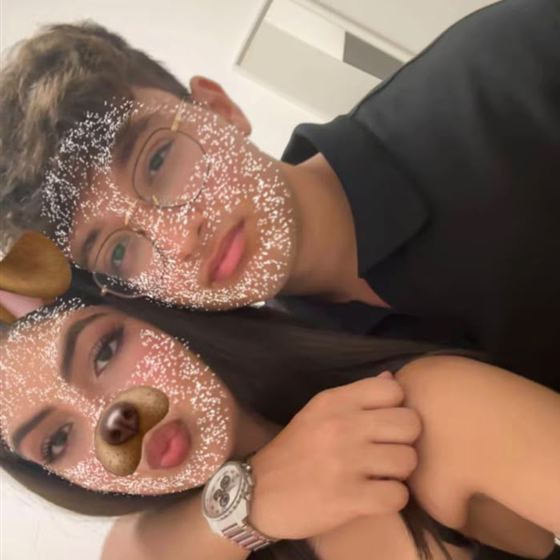

IL NOSTRO PICCOLO VIAGGIO
Parigi,
a due.
Cinque giorni di meraviglia.
Tra arte, magia e un po’ di noi.
5 — 9 novembre 2026France
Mancano alla partenza
48°51′ N · 2°21′ Eune escapade à Paris

UN GIORNO ALLA VOLTA
La nostra Parigi.
Giorno 1 / Giovedì 05 novembre 2026
Il primo sguardo su Parigi.
L’arrivo, una passeggiata lungo la Senna e una cena con la Torre Eiffel davanti agli occhi.
Torre Eiffel · Senna · Passy
Mattina
Si parte- 06:00Partenza da casaViaggio
Trasferimento verso l’aeroporto e controlli prima del volo.
- 10:25Partenza del volo per ParigiViaggio
Decollo alle 10:25.
- 13:20Arrivo a ParigiViaggio
Atterraggio alle 13:20. Poi pranzo in aeroporto.
- All’arrivoPranzo in aeroportoPausa
Una pausa prima del trasferimento in hotel.
Pomeriggio
Finalmente qui- 14:00Check-in in hotelHotel
Sistemare i bagagli, fare una doccia e cambiarsi.
- A seguireTorre EiffelPasseggiata
Prima passeggiata e prime foto. Negli appunti: circa 10 minuti a piedi dall’hotel.
- Poi
- PoiPasserelle DebillyPasseggiata
Un momento romantico sul ponte. Portare il lucchetto per una foto ricordo insieme.
- Con calmaPicnic lungo la SennaPausa
Una piccola pausa insieme, meteo permettendo.
Sera
La città si illumina- Prima di cenaCrociera sulla SennaEsperienza
Scegliere la corsa in base all’orario della cena e al punto di imbarco.
- CenaLa FrancetteRistorante
Cena con vista sulla Torre Eiffel. Seguire i dettagli della prenotazione.
- Dopo cena
- PoiRientro in hotelHotel
Riposo, domani ci aspetta Montmartre.
Da ricordare
Il viaggio
Partenza da casa alle 06:00. Volo 10:25 → 13:20: controllare gli orari aggiornati sulla carta d’imbarco.
Il check-in
Previsto dalle 14:00 negli appunti. Pranzo in aeroporto, poi hotel, doccia e cambio.
La cena
La Francette con vista Torre Eiffel. Penthouse indicato negli appunti; orario e tavolo fanno fede alla prenotazione.
Una foto dalla métro
Linea 6 da Passy verso Bir-Hakeim, come negli appunti. Controllare il servizio prima di partire.
Da tenere a portata di mano
Carta d’imbarco e documentiConferma hotel e La FrancetteBiglietti e imbarco della crociera
Giorno 2 / Venerdì 06 novembre 2026
Tra quartieri e Montmartre.
Una mattina allo zoo, poi Les Invalides e i vicoli di Montmartre. La sera, una cena e una passeggiata senza fretta.
Zoo · Les Invalides · Montmartre
Mattina
Colazione e zoo- Colazione
- 08:30Bus 86 verso lo zooDa verificare
Orario riportato negli appunti; verificare il tragitto dopo aver scelto lo zoo.
- 09:30Visita allo zooDa verificare
Nome e apertura dello zoo da precisare. L’orario è quello della foto.
- PranzoRientro e pranzo in hotelHotel
Una pausa prima del pomeriggio in città.
Pomeriggio
Verso Montmartre- Dopo pranzo
- Poi
- A piedi
- A piedi
- A seguire
- Prima di cenaRientro in hotelHotel
Doccia e cambio prima di uscire di nuovo.
Sera
Una cena insieme- Cena
- Dopo cenaPasseggiata seralePasseggiata
Ancora un po’ di Parigi, poi rientro in hotel.
Da ricordare
Colazione
Maison Bergeron, come scritto nella foto. Verificare la sede prima di impostare il percorso.
Zoo e bus 86
Negli appunti: bus 86 alle 08:30 e zoo alle 09:30. Il nome dello zoo non è specificato: destinazione, fermate e apertura sono da confermare.
Il pomeriggio
Dopo il pranzo in hotel: Les Invalides, poi spostamento verso Montmartre. Gli spostamenti non sono stimati dall’hotel perché manca l’indirizzo.
La sera
Atelier de l’Entrecôte indicato nella foto. Controllare sede e prenotazione.
Da tenere a portata di mano
Nome e biglietti dello zooPercorso e fermata del bus 86Sede del ristorante per la cena
Giorno 3 / Sabato 07 novembre 2026
Un giorno a Disneyland.
Dal Castello della Bella Addormentata alle montagne russe, fino all’ultimo spettacolo. Oggi si torna un po’ bambini.
Disneyland Park · Marne-la-Vallée
Mattina
La magia comincia- 07:30Sveglia e colazione in hotelHotel
Preparare lo zaino, i biglietti e la colazione portata in hotel.
- PoiVerso DisneylandSpostamento
Métro e RER A fino a Marne-la-Vallée–Chessy. Pianificare il tragitto dall’hotel.
- 09:30Apertura Disneyland e Main StreetDisney
Ingresso al parco e prima passeggiata su Main Street, U.S.A. Orario riportato nella foto.
- FantasylandIl Castello e le fiabeAttrazioni
Le Château de la Belle au Bois Dormant e la Galerie de la Belle au Bois Dormant.
- Blanche-Neige et les Sept Nains
- Les Voyages de Pinocchio
- Alice’s Curious Labyrinth
- FrontierlandAvventura nel Far WestAttrazioni
Le due tappe della mattina a Frontierland.
- Big Thunder Mountain
- Phantom Manor
Pomeriggio
Ancora un giro- PranzoColonel Hathi’s OutpostRistorante
Pausa pranzo ad Adventureland, secondo apertura e disponibilità.
- AdventurelandPirati, templi e AladdinAttrazioni
Le tappe di Adventureland previste negli appunti.
- Pirates of the Caribbean
- Indiana Jones et le Temple du Péril
- Le Passage Enchanté d’Aladdin
- DiscoverylandVerso una galassia lontanaAttrazioni
Le attrazioni di Discoveryland.
- Star Wars Hyperspace Mountain
- Orbitron
- Autopia
- 17:00?Parata su Main StreetSpettacolo
Orario segnato con punto interrogativo nella foto. Controllare il programma del giorno nell’app Disney.
- Tempo liberoRitorno al CastelloDisney
Completare le attrazioni rimaste e rifare il giro preferito, secondo attese e aperture.
Sera
L’ultima meraviglia- CenaCasa de Coco o Café HyperionRistorante
Le due alternative annotate: Casa de Coco a Frontierland, oppure Café Hyperion a Discoveryland.
- 22:00Spettacolo finaleSpettacolo
Orario riportato nella foto. Consultare l’app Disney per eventuali aggiornamenti del programma.
- PoiRientro in hotelSpostamento
Controllare l’ultima corsa utile prima di fermarsi per lo spettacolo.
Da ricordare
La partenza
Sveglia alle 07:30, colazione portata in hotel e partenza. Anticipare se necessario in base all’apertura effettiva e alla distanza dall’hotel.
Come arrivare
Raggiungere la RER A in direzione Marne-la-Vallée–Chessy. Controllare percorso e servizio prima della partenza.
Parata e spettacolo
09:30 per l’apertura, 17:00 per la parata e 22:00 per il finale sono gli orari della foto, non orari confermati del 7 novembre. Consultare l’app Disney.
Pranzo e cena
Pranzo da Colonel Hathi’s Outpost. Per cena: Casa de Coco a Frontierland oppure Café Hyperion a Discoveryland, secondo preferenza e disponibilità.
Da tenere a portata di mano
Biglietti DisneylandApp Disney e orari del 7 novembrePower bank e scarpe comode
Disney · orari e calendario ↗Disney · come arrivare da Parigi ↗Disney · parate e spettacoli ↗
Giorno 4 / Domenica 08 novembre 2026
L’arte, i dolci e i grandi viali.
Louvre all’apertura, Musée d’Orsay e pranzo. Poi Grand Palais, rooftop, pasticcerie e Champs-Élysées, fino a salire sull’Arco di Trionfo.
Louvre · Orsay · Opéra · Champs-Élysées
Mattina
Appuntamento con l’arte- 09:00Musée du LouvreMuseo
Ingresso all’apertura. Una visita mirata alle opere che volete vedere, poi attraversamento verso Orsay.
- A seguireMusée d’OrsayMuseo
Seconda visita della mattina. La domenica l’orario ordinario è 09:30–18:00; scegliere un ingresso compatibile con l’uscita dal Louvre.
- PranzoUna pausa dopo i museiPausa
Pranzo prima del percorso del pomeriggio. Locale da scegliere.
Pomeriggio
Tra palazzi e pasticcerie- Dopo pranzoGrand PalaisDa vedere
Tappa al Grand Palais. Per entrare in una mostra, scegliere l’esposizione e verificare il relativo biglietto.
- Poi · OpéraGaleries Lafayette HaussmannPanorama
Salita al rooftop per vedere i tetti di Parigi. Trasferimento dalla zona Grand Palais; accesso secondo meteo e condizioni della terrazza.
- Pausa dolceCédric GroletPasticceria
Proposta: sede Opéra, per abbinarla alla tappa Haussmann. Considerare l’attesa prima di fermarsi.
- Pausa dolceMadameDa identificare
Tappa richiesta, da completare con il nome esatto o l’indirizzo del locale.
- Pausa dolcePierre HerméPasticceria
Un’altra sosta golosa lungo il percorso. Sede da scegliere in base agli spostamenti.
- Poi
- Slot prenotatoLa Galerie DiorMuseo
Deviazione verso 11 rue François-Ier, vicino ad avenue Montaigne. Normalmente aperta 11:00–19:00; spostare prima questa tappa se lo slot lo richiede.
Verso sera
Parigi dall’alto- PasseggiataPalazzo Louis VuittonDa precisare
Passeggiata verso l’edificio Louis Vuitton nella zona Champs-Élysées. L’edificio preciso va confermato; la mappa apre una ricerca nella zona.
- Gran finaleSalita all’Arco di TrionfoPanorama
Salire sulla terrazza per il panorama. Orario ordinario di novembre: fino alle 22:30, ultimo accesso alle 21:45. Ingresso dal passaggio sotterraneo.
Da ricordare
Si comincia alle 09:00
Il Louvre apre normalmente alle 09:00 la domenica. Prenotare il primo ingresso e scegliere prima le opere da vedere.
Due musei nella mattina
Louvre → Musée d’Orsay → pranzo, come richiesto. Sono visite mirate: il tempo dipende da file, biglietti e sale scelte.
La deviazione a Opéra
Galeries Lafayette Haussmann e Cédric Grolet Opéra richiedono uno spostamento dal Grand Palais. Prevedere métro o taxi per questa parte.
Dolci e indirizzi
“Madame” è mantenuto con il nome fornito: manca il locale esatto. Per Pierre Hermé scegliere la sede lungo il percorso; i link aprono una ricerca, non una sede confermata.
Dior prima della sera
La Galerie Dior si trova in rue François-Ier, vicino ad avenue Montaigne, e normalmente chiude alle 19:00. Dare priorità allo slot prenotato, anticipando questa tappa se serve.
Il finale
Louis Vuitton è inteso nella zona Champs-Élysées; l’edificio preciso resta da confermare. Poi salita all’Arco di Trionfo, normalmente aperto fino alle 22:30 a novembre (ultimo accesso 45 minuti prima).
Da tenere a portata di mano
Ingresso Louvre alle 09:00Biglietti Orsay, Dior e ArcoIdentificare “Madame” e l’edificio Louis Vuitton
Louvre · orari e ingressi ↗Musée d’Orsay · visita ↗Grand Palais · informazioni ↗Lafayette · rooftop ↗Galerie Dior · informazioni ↗Arco di Trionfo · orari ↗
Giorno 5 / Lunedì 09 novembre 2026
Un’ultima mattina, tutta per noi.
Nessuna tappa obbligata. Una colazione lenta, un ultimo giro o semplicemente il piacere di essere ancora qui.
Mattinata libera
Mattina libera
Senza orologio- Con calmaL’ultima colazione pariginaLibero
Un café, qualcosa di buono e il tempo di godersi ancora la città.
- Come ci vaSpazio all’improvvisazioneLibero
Una passeggiata, le ultime foto, un po’ di shopping o il ritorno nel posto del cuore. Nessuna tappa obbligata.
Da ricordare
Mattina libera
Nessun museo o appuntamento fissato. Scegliere sul momento, secondo voglia e tempo a disposizione.
Prima di ripartire
Check-out, deposito bagagli, trasferimento e volo di ritorno non sono indicati nelle foto. Aggiungere i dati reali negli appunti.
Da tenere a portata di mano
Controllare check-out e bagagliVerificare il volo di ritornoCalcolare il trasferimento in aeroporto
QUALCHE COORDINATA IN PIÙ
Per goderci la giornata.
Da tenere a portata di mano
LE COSE DA NON DIMENTICARE
Uno spazio per noi.
Indirizzi, prenotazioni, un posto scoperto per caso. Il viaggio prende forma anche qui.
Appunti salvati automaticamente su questo dispositivo.